Фотографии
Училишната зграда, дворот, спортските терени и кабинетите.
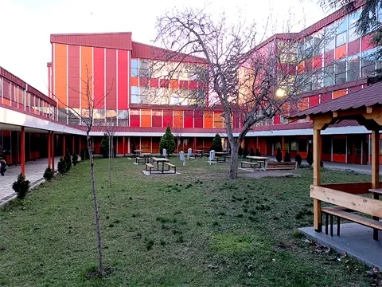
Внатрешниот двор и зградата на училиштето 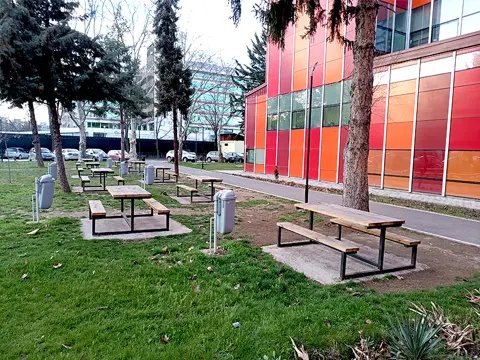
Маси и клупи во зеленилото покрај училиштето 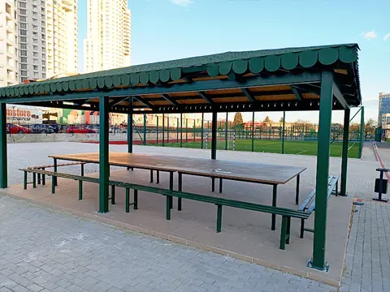
Покриен простор со маси во дворот 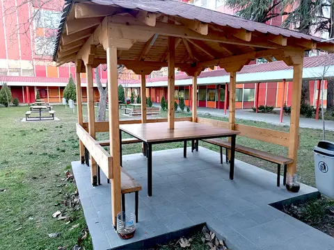
Дрвен павилјон со маса и клупи 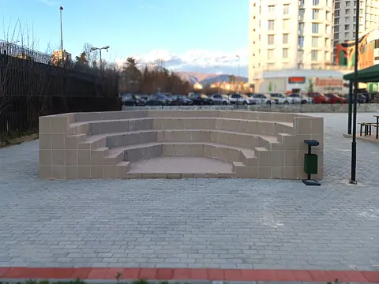
Амфитеатар на отворено 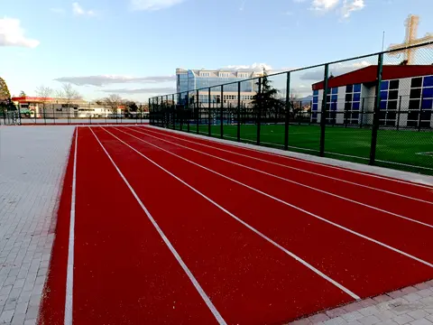
Атлетска патека 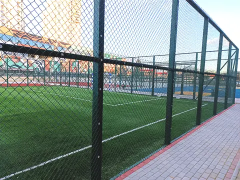
Игралиште со вештачка трева 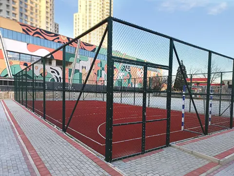
Игралиште за ракомет 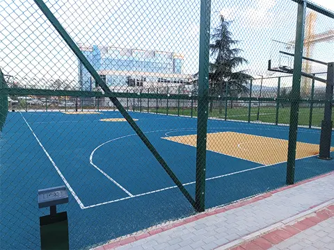
Кошаркарско игралиште 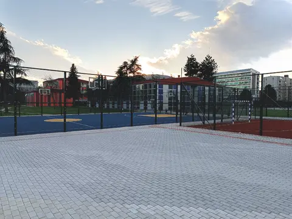
Поплочен простор покрај спортските терени 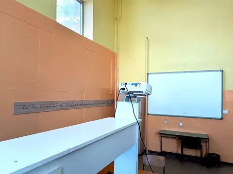
Училница со бела табла и проектор 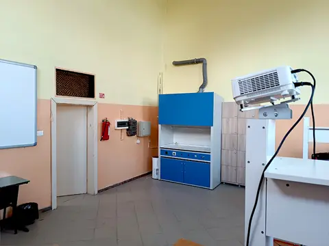
Кабинет со дигестор и проектор 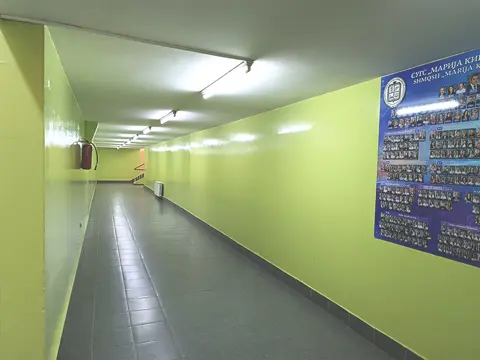
Ходник со пано со фотографии 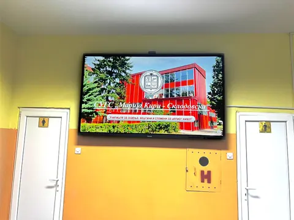
Хол со екран за известувања 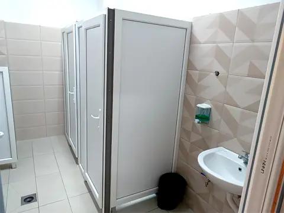
Реновиран санитарен јазол


Контакт
- Адреса
- бул. „Трета Македонска Бригада“ бр. 63-А
1000 Скопје, општина Аеродром - Телефон
- +389 2 2403 141